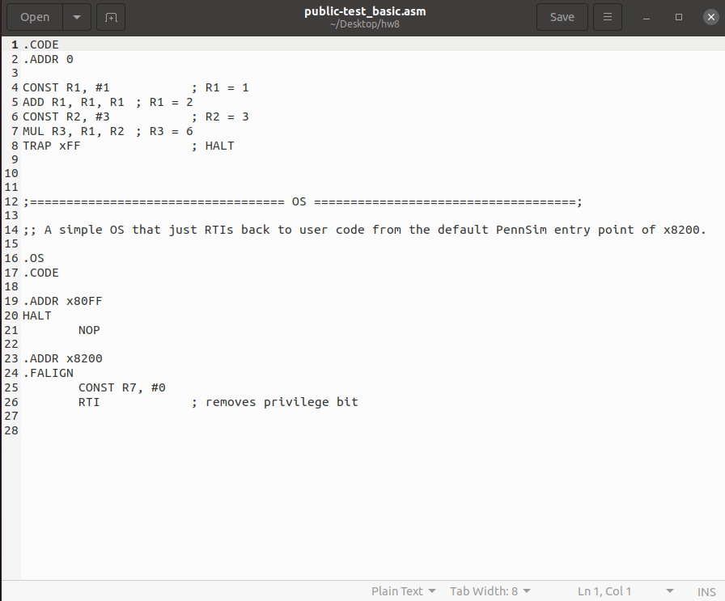
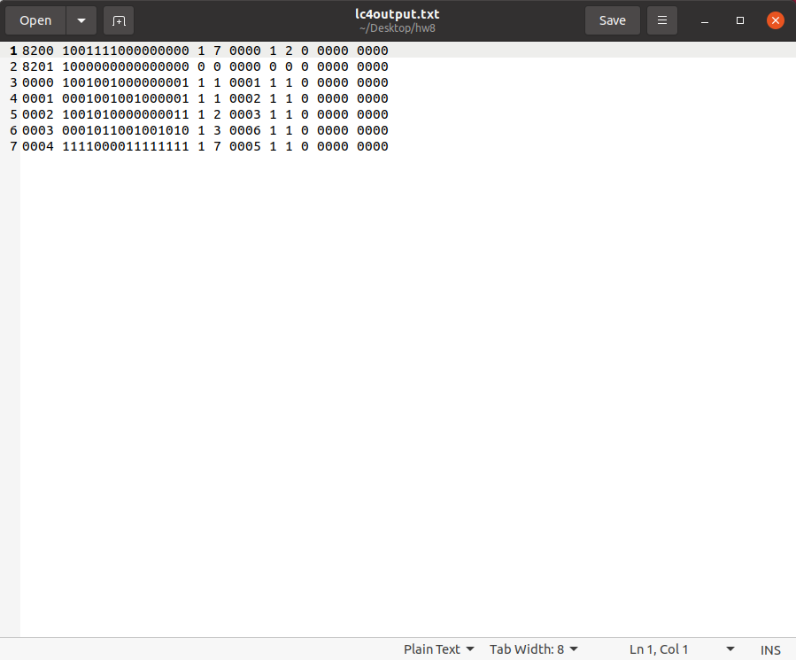

 ➔ 
C
For this CIS240 project, we had to create a program that had the functionality of an assembly line simulator. The program takes in object files and outputs a text file with the instructions after having simulated their execution.
See code here